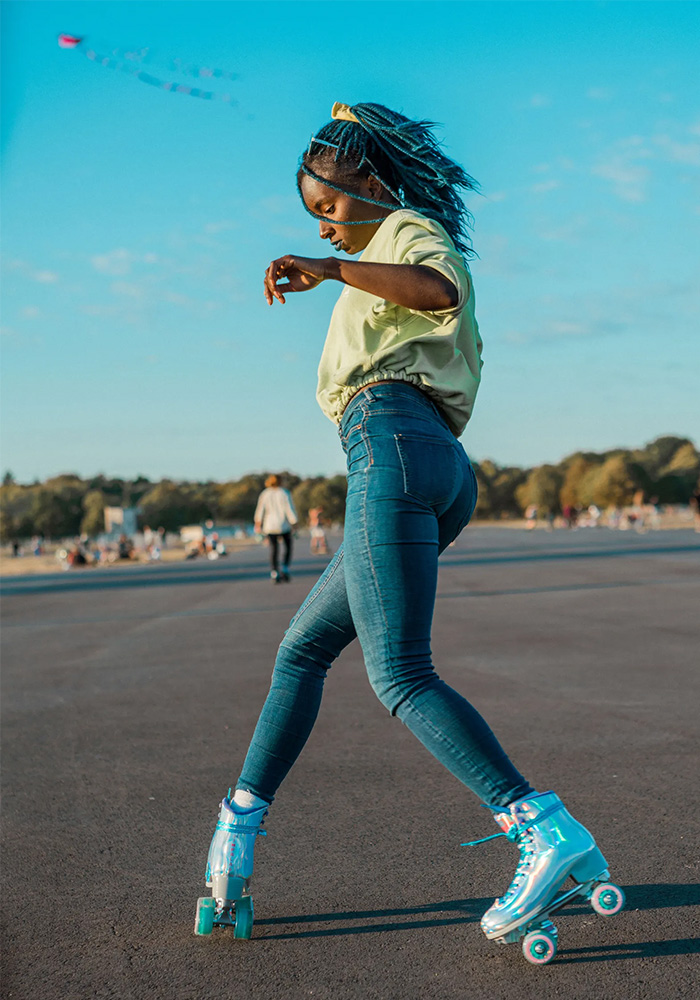

Jam Skating
Disco Isn't Dead, Baby
Jam skating is a form of skating that involves being able to perform choreographed routine dances or freestyle dancing on skates. Typically seen in indoor and outdoor rinks but also practiced in any recreational environment. All jam skaters having roots in roller disco wheels on their feet, it becomes more than just breakdancing with skates on.
Jam skaters perform to the music playing. Staying on beat, matching the song and energy is all part of the skaters musicality. These techniques and abilities to perform wild moves all while dancing and staying on beat is vital to their overall jam skating ability.
Jam skating is historically known to be most similarly related to break dancing and choreographed performances while on skates. Rhythm skating being more related to the way you dance to the best of the music and follow the rhythm of a particular song. There are some differences in the equipment used on the skates that will further separate the two different styles. A few significant differences to note are the height of the boot, whether it’s a low cut or high cut boot, the size of the wheel, whether you are using a toe stop or a toe plug and even the axles used on the bottom of the skate boot. Each of these pieces of equipment will change your skating style and allow easier access to certain moves and even give you better maneuverability depending on what you want to achieve.
Jam skating particularly will be seen in the center of a roller rink performing their dances and ground work, while rhythm skaters stay mostly to the outer part of the rink as they flow and rhythm with their own distinguished foot work around the entire rink. Jam roller skates is a term used to describe all skaters who dance while skating. While there are different niches under this umbrella, it all boils down to your preference and style you would like to learn.